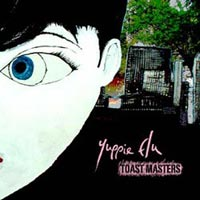
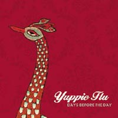
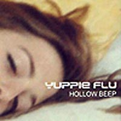
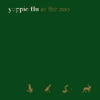
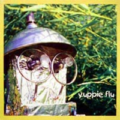

Album
Toast Masters
CD Homesleep 2005

01.Glueing All The Fragments
02.Our Nature
03.Stray On Free
04.A Good Guide
05.Make A Stand
06.Together
07.Better Than Ever
08.One Shot
09.Pain Is Over
10.Vultures And Fortune
11.Europe Is Different
 |
Buy Online | Lyrics
|
Buy Online | Lyrics
Days Before The Day
CD Homesleep 2003

01.Drained By Diamonds
02.Food For The Ants
03.Spring To Downcomers
04.I Feel Lucky
05.All That Shines
06.Eyes Of Dazzling Bright
07.Dreamed Frontier
08.Silverdeer
09.Female Scientist
10.Now And On
 |
Buy Online | Lyrics
|
Buy Online | Lyrics
Hollow Beep*
CD Doxa 2001

01. The Fairy Tales Of Young Robin
02. The blue experiment
03. Order the player off the field
04. Boat or swim
05. Ambassadors
06. Wheel deal.
07. Sport yer feelings
08. A song's a song
09. Wise hitch-hiker handbook
10. Stolen boat . . .
* ristampa per il mercato europeo di 'yuppie flu at the zoo' con alcune canzoni del 'boat ep'
* yuppie Flu At The Zoo + the Boat ep reissue for the european market
Yuppie Flu At The Zoo
CD Home/Flop 1999

01.Sport yer feelings
02. Private Eye At The Zoo
03. The Fairy Tales Of Young Robin
04. Ambassadors
05. Wheel Deal
06. Stolen Boat...
07. Sinking Thief
08. Silver Rain
09. Retirement Speech
10. Gummo
11. Wise Hitch-Hiker Handbook
12. Back Home
 |
Buy Online | Lyrics
|
Buy Online | Lyrics
Automatic But Static
CD Vurt/Valium 1998

01. Nephology
02. No Air In The Mir
03. Misunderstanding
04. My Plug
05. Elemental
06. Splinter
07. Graceful Dead
08. Shuttle Song
09. Turnip Soup
10. Circuits Rainbow
11. Rune Staff
12. Laser From A Log
13. Digital Girl
14. Remote Viewer
15. Cheap As Bread
16. Old New?
17. Yup-Flux